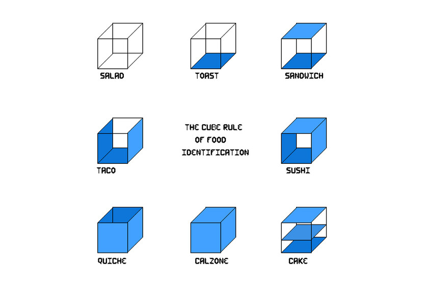

Solution: Sandwich Shop
Answer: HEALTHY GRAINS
Written by Adeline Wong
This puzzle is a simple list of crossword clues, though the indexes at the ends look a little weird. Solving enough of the clues should reveal that all of our answers are nouns, and reading the first letters of each clue gives us the phrase BULLFRAG CUBE RULE—evidently, we need to categorize these objects so that they match a type of food according the the Bullfrag definition (pictured below).

With a little creativity, and a lot of stretching of the rules of geometry, we can decide on a cube rule category for each of our objects. The answer to the clue is always the same length as its category, which should both help with identification and clue the eventual extraction: taking the letter of the object in the same position as the "index" letter in the cube rule category yields SOL HEALTHY GRAINS.
| Bereaved relatives might use an open one to display a body (I) | CASKET | QUICHE |
| Uncle Tom's Cabin, The Little Prince, and The Fellowship of the Ring are all examples of this (A) | BOOK | TACO |
| Lions or Bears might play on one (S) | FIELD | TOAST |
| Lord or knight's head protection (Q) | HELMET | QUICHE |
| For siblings or some college roommates to sleep on (pl.) (I) | BUNKBEDS | SANDWICH |
| Respectable castle defenses include one of these (C) | MOAT | TACO |
| A folder used for keeping papers together (C) | FILE | TACO |
| Garment, sometimes pleated, that fastens around the waist (I) | SKIRT | SUSHI |
| Case or diplomat (N) | ATTACHE | CALZONE |
| Ulubey, Zion, or Grand, for instance (C) | CANYON | QUICHE |
| Box, maybe, that a delivery comes in (N) | PACKAGE | CALZONE |
| Edges around a painting, maybe (U) | FRAME | SUSHI |
| Rather large vehicle that a family might drive around in (N) | MINIVAN | CALZONE |
| Used for carrying water or gas (pl.) (U) | PIPES | SUSHI |
| Landlubbers might be forced to walk off of one (S) | PLANK | TOAST |
| English (American) term for a roundabout or hurdy-gurdy (I) | CAROUSEL | SANDWICH |
Author’s Notes
Part of me feels like Ella should also have author credit on this one, because of the many long hours we spent trying to write a much cooler, much more ambitious puzzle with the same name for this slot. Alas, sometimes we reach too high and are simply doomed to fall.
This version, on the other hand, was written extremely last-minute—smack in the middle of a full-hunt testsolve. It still somehow (despite our best efforts) survived relatively unchanged until the hunt itself.
Some of my favorite off-the-wall musings, which failed to make it into the puzzle for probably obvious reasons:
- If you follow the directions for microwaving a hot pocket, you're making a calzone-sushi-calzone.
- A person wearing headphones (the over-the-ear kind, not earbuds) is a taco.